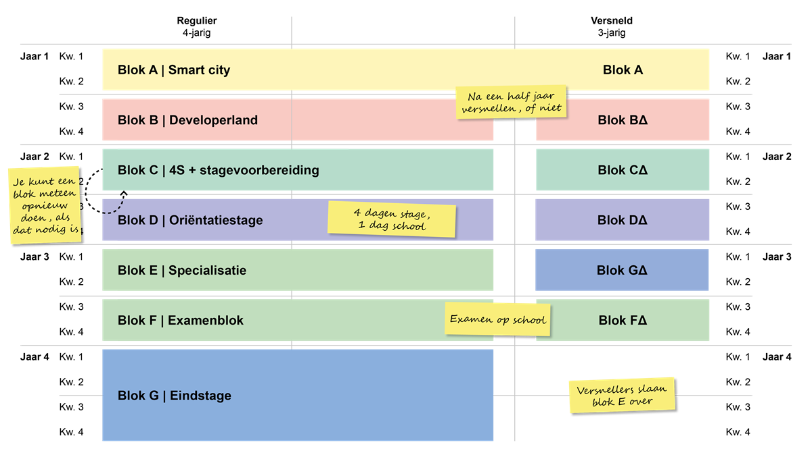

Vakken in het eerste jaar
PRA: Praktijkwerk
Je werkt zelfstandig of in een groep aan de praktijkopdrachten in ons praktijklokalen.
PRO: Praktijkondersteuning
Je krijgt coaching en ondersteuning bij de praktijkopdrachten. Meestal gaat dat vak niet over programmeren, maar juist over de andere kanten van ons opleiding.
WEB: Web-ontwikkeling
Dit vak gaat over het maken van websites en webapplicaties. We beginnen simpel met de opmaaktalen HTML en CSS, dat zijn de bouwstenen van een website. Daarna leer je een interactieve website te bouwen. Voor meer informatie kijk je in de moduleboekjes.
DIV: Keuzedeel Digitale vaardigheden
Je eerste keuzedeel mag je niet kiezen; iedereen volgt in dit blok ‘digitale vaardigheden’. Daarmee leer je alles wat je nodig hebt om nette verslagen te maken en slim met je computer te werken.
Codelab
Bij CodeLab krijg je geen nieuwe lesstof. Je kunt je concentreren op huiswerk, extra uitleg en bijlessen. Als je huiswerk klaar is en je begrijpt alles, dagen we je uit om jezelf verder te ontwikkelen als developer.
Native
Tijdens de lessen Native krijgen we lessen over het ontwikkelen van systemen, zoals en kassasystemen
Rooster

Het rooster van een eerstejaars verschilt per klas, maar doorgaans bestaat het lesrooster uit ongeveer 22 lesuren per week.
Blokindeling
Welkom bij onze vierjarige opleiding Software Developer! We begrijpen dat de structuur van de opleiding belangrijk is om te begrijpen, en daarom willen we je graag informeren over de indeling van de blokken. In de reguliere vierjarige variant doorloop je verschillende blokken die je voorbereiden op een succesvolle carrière in de softwareontwikkeling. Deze blokken zijn:
Zoals je op de foto kunt zien hebben we ook de mogelijkheid om de opleiding te versnellen, daarmee hoef je de laatste jaar geen stage te lopen. Om dat te kunnen doen moet je wel in het begin van je opleiding bekend maken bij je mentor, de reden daarvoor is dat er in het eerste half jaar al de beselissing wordt genomen of je de versnelde traject aan kan of niet.
Programmeertalen
Tijdens je opleiding ga je kennis maken met verschillende soorten programmeertalen die verschillende functies hebben. De programmeertalen die je zult krijgen zijn de volgende
- HTML
- CSS
- JavaScript
- PHP
- MySQL
- Laravel
De bovenstaande programmeertalen zul je bij het vak WEB krijgen
- Python
- C#
De bovenstaande programmeertalen zul je bij het vak Native krijgen